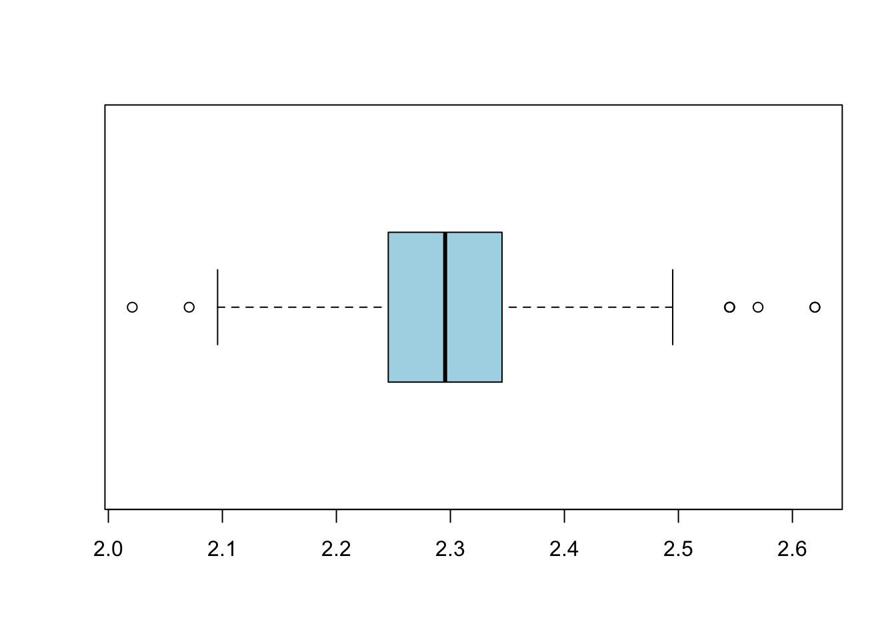

Chapter 2 📊 Descriptive Statistics
2.1 Sample Size
- Definition: Number of observations in the dataset
- Formula: \[ n \]
Variable A
| Metric | Value |
|---|---|
| Total | 230 |
| Missing | 0 |
| Non-missing | 230 |
| Missing (%) | 0 |
| Non-missing (%) | 100 |
2.2 Histogram and Range
- Range: Difference between max and min
- Formula: \[ \text{Range} = x_{\max} - x_{\min} \]
2.2.0.1 Constructing a Histogram (Step-by-Step)
- Find the minimum value \(x_{\min}\)
- Find the maximum value \(x_{\max}\)
- Choose Number of Classes:
- Classes are the groups (bins) used in a histogram.
Rule of Thumb (Sturges’ Rule):
\[k = 1 + 3.322 \log_{10}(n)\]
- Where:
- \(k\) = number of classes
- \(n\) = number of observations
Simple guideline:
| Sample Size (n) | Number of Classes (k) |
|----------------|------------------------|
| 10–20 | 4–5 |
| 20–50 | 5–7 |
| 50–100 | 7–10 |
| 100+ | 10–20 |- Compute Class Width:
- Formula: \[ \text{Class Width} = \frac{\text{Range}}{\text{Number of Classes}} \]
- Create Class Intervals:
- No overlapping intervals
- Cover all data values
- Calculate Relative Frequency:
- Formula: \[ \text{Relative Frequency} = \frac{f}{n} \]
- Draw the Histogram
Variable A
| Statistic | Value |
|---|---|
| Minimum | 2.02095 |
| Maximum | 2.61975 |
| Range | 0.59880 |


2.3 Central Tendency (average, median, mode)
2.3.0.1 - Average (mean)
- Definition: Sum of all values divided by number of observations
- Formula: \[ \bar{x} = \frac{1}{n} \sum_{i=1}^{n} x_i \]
2.3.0.2 - Median
Definition: Middle value when data is sorted
If \(n\) is odd: \[ \text{Median} = x_{\frac{n+1}{2}} \]
If \(n\) is even: \[ \text{Median} = \frac{x_{\frac{n}{2}} + x_{\frac{n}{2}+1}}{2} \]
2.3.0.3 - Mode
- Definition: Most frequently occurring value
The mode is preffered over the mean and median only if the relative frequency of occurence of \(y\) is of interest. For example, a supplier of carpenters materials would be intersted in the modal lenght of neils he sells.
Variable A
| Statistic | Value |
|---|---|
| Mean | 2.30234260869565 |
| Median | 2.2954 |
| Mode | 2.2954, 2.32035 |
2.4 Variance & Standard Deviation
2.4.0.3 - Sample Variance
\[ s^2 = \frac{1}{n-1} \sum_{i=1}^{n} (x_i - \bar{x})^2 \] See details in Appendix 4.
2.4.0.4 - Sample Standard Deviation
\[ s = \sqrt{s^2} \]
The Emperiical Rule:
- Approximately 68% of data falls within 1 standard deviation of the mean \((\bar{x} \pm s)\)
- Approximately 95% of data falls within 2 standard deviations of the mean \((\bar{x} \pm 2s)\)
- Almost all data (99.7%) falls within 3 standard deviations of the mean \((\bar{x} \pm 3s)\).
2.5 Coefficient of Variation
- Definition: Relative measure of variability
- Formula: \[ CV = \frac{s}{\bar{x}} \times 100\% \]
It measures the \(std\) relative to the mean.
2.6 Quartiles
Definition: Divide data into 4 equal parts
Q1: 25th percentile
Q2: Median (50th percentile)
Q3: 75th percentile
Variable A
| Percentile | Value |
|---|---|
| 0% | 2.02095 |
| 25% | 2.24550 |
| 50% | 2.29540 |
| 75% | 2.34530 |
| 100% | 2.61975 |
2.7 Interquartile Range (IQR)
- Definition: Distance between Q1 and Q3
- Formula: \[ IQR = Q3 - Q1 \]
2.7.0.1 - Inner and outer fences
\[ \text{Inner fences} = [Q1 - 1.5 \times IQR, Q3 + 1.5 \times IQR] \] \[ \text{Outer fences} = [Q1 - 3 \times IQR, Q3 + 3 \times IQR] \]
Variable A
| Statistic | Value |
|---|---|
| Lower Outer fence | 1.9461 |
| Lower inner fence | 2.0958 |
| Q1 | 2.2455 |
| Median | 2.2954 |
| Q3 | 2.3453 |
| Upper inner fence | 2.4950 |
| Upper outer fence | 2.6447 |

2.8 Z-score (Standard Score)
- Definition: A z-score shows how many standard deviations a value is from the mean.
- Formula: \[ z = \frac{x - \bar{x}}{s} \]
Rule of thumb for detecting outliers:
- z-score: observations with |z| > 3 are considered outliers;
- Box plot: observations falling between the inner and outer fences are considered mild outliers; observations falling outside the outer fences are considered extreme outliers.
2.9 Skewness
- Definition: Measure of asymmetry
More probability than expected in one tail of the distribution. - Formula: \[ \text{Skewness} = \frac{1}{n} \sum \left(\frac{x_i - \bar{x}}{s}\right)^3 \]
| Skewness Value | Meaning | Interpretation |
|---|---|---|
| ≈ 0 | Symmetric | Data is evenly distributed; mean ≈ median |
| > 0 | Positive skew | Right-skewed; long tail on the right; mean > median |
| < 0 | Negative skew | Left-skewed; long tail on the left; mean < median |
| 0.5 to 1 | Moderate skew | Noticeable asymmetry in distribution |
| > 1 | Strong skew | Highly asymmetric distribution |
2.10 Kurtosis
- Definition: Measure of tail heaviness
Probability are pushed away from the mean towards the tails. - Formula: \[ \text{Raw Kurtosis} = \frac{1}{n} \sum \left(\frac{x_i - \bar{x}}{s}\right)^4 \] \[ \text{Excess Kurtosis} = \text{Raw Kurtosis} - 3 \]
| Kurtosis Value (Excess) | Distribution Type | Meaning | Interpretation |
|---|---|---|---|
| ≈ 3 (Raw kurtosis) | Mesokurtic | Normal-like distribution | Similar peak and tail thickness as normal distribution |
| > 3 (Raw kurtosis) | Leptokurtic | Heavy-tailed distribution | More extreme values (outliers), sharper peak |
| < 3 (Raw kurtosis) | Platykurtic | Light-tailed distribution | Fewer outliers, flatter peak, more evenly spread data |
| ≈ 0 (Excess kurtosis) | Mesokurtic | Normal-like distribution | Similar peak and tails as normal distribution |
| > 0 (Excess kurtosis) | Leptokurtic | Heavy-tailed distribution | More outliers; sharper peak than normal |
| < 0 (Excess kurtosis) | Platykurtic | Light-tailed distribution | Fewer outliers; flatter peak than normal |
2.11 Covariance
- Definition: Joint variability of two variables
Covariance is one of family of statistical measures that describe the relationship between two variables. It indicates the direction of the linear relationship between them. A positive covariance indicates that the two variables tend to increase together, while a negative covariance indicates that one variable tends to increase when the other decreases. However, covariance does not provide information about the strength of the relationship, which is why correlation is often used as a standardized measure of covariance. - Formula: \[ \text{Cov}(X,Y) = \frac{1}{n-1} \sum (x_i - \bar{x})(y_i - \bar{y}) \]
Covariance result has no upper or lower bound, and its value is influenced by the scale of the variables. While correlation, on the other hand, is a standardized measure of covariance that ranges between -1 and 1, providing information about both the direction and strength of the linear relationship between two variables.
2.12 Correlation (Pearson)
- Definition: Standardized covariance
Correlation caveats:
- Look at you data(scatterplot) before interpreting the correlation coefficient
- Correlation is only applicable for linear relationships.
- Correlation is NOT causation. A high correlation does not imply that changes in one variable cause changes in the other.
- Formula: \[ r = \frac{\text{Cov}(X,Y)}{s_x s_y} \]
| Correlation (r) | Strength | Interpretation |
|---|---|---|
| 0.00 – 0.10 | None | No linear relationship |
| 0.10 – 0.30 | Weak | Slight trend, not reliable |
| 0.30 – 0.50 | Moderate | Noticeable relationship |
| 0.50 – 0.70 | Strong | Clear relationship |
| 0.70 – 0.90 | Very strong | Highly related variables |
| 0.90 – 1.00 | Near perfect | Almost perfectly linear |
| -0.10 – 0.00 | None (negative) | No linear relationship |
| -0.30 – -0.10 | Weak negative | Slight inverse trend |
| -0.50 – -0.30 | Moderate negative | Noticeable inverse relationship |
| -0.70 – -0.50 | Strong negative | Clear inverse relationship |
| -1.00 – -0.70 | Very strong negative | Highly inverse relationship |
| -1.00 | Perfect negative | Perfect inverse linear relationship |
Rule of thumb:
if \(|r| \geq \frac{2}{\sqrt(n)}\), the correlation is considered strong.